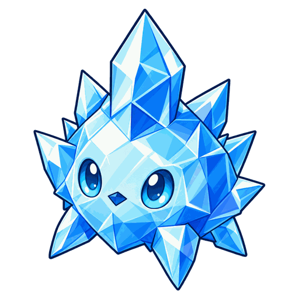

Активное
Кристальный взрыв
Наносит текущей цели в пределах 1 кл. магический урон в размере 1230% силы магии. Другим врагам в пределах 1 кл. от цели наносит магический урон в размере 615% силы магии.

No.011
ТанкМаг Сезон 1
Наносит магический урон текущей цели и врагам рядом с ней, а также накладывает на врагов поблизости от себя Иней, снижающий скорость атаки.
| Характеристика | Lv.1 | Lv.11 |
|---|---|---|
| Здоровье | 440 | 1780 |
| Сила атаки | 16 | 65 |
| Сила магии | 16 | 65 |
| Броня | 45 | 45 |
| Сопротивление магии | 45 | 45 |
| Интервал атаки | 0,67 сек. | 0,67 сек. |
| Дальность | Ближний бой · 1 кл. | Ближний бой · 1 кл. |
| Мана | 0 / 50 | 0 / 50 |
Здоровье, сила атаки и сила магии растут на 15% с каждым уровнем (до Lv.11).
Активное
Наносит текущей цели в пределах 1 кл. магический урон в размере 1230% силы магии. Другим врагам в пределах 1 кл. от цели наносит магический урон в размере 615% силы магии.
Пассивное
Накладывает на врагов в пределах 1 кл. от себя Иней, который снижает их скорость атаки на 15%. Иней держится, только пока враг остаётся в этих пределах. Эффекты нескольких «Волн холода» не суммируются.